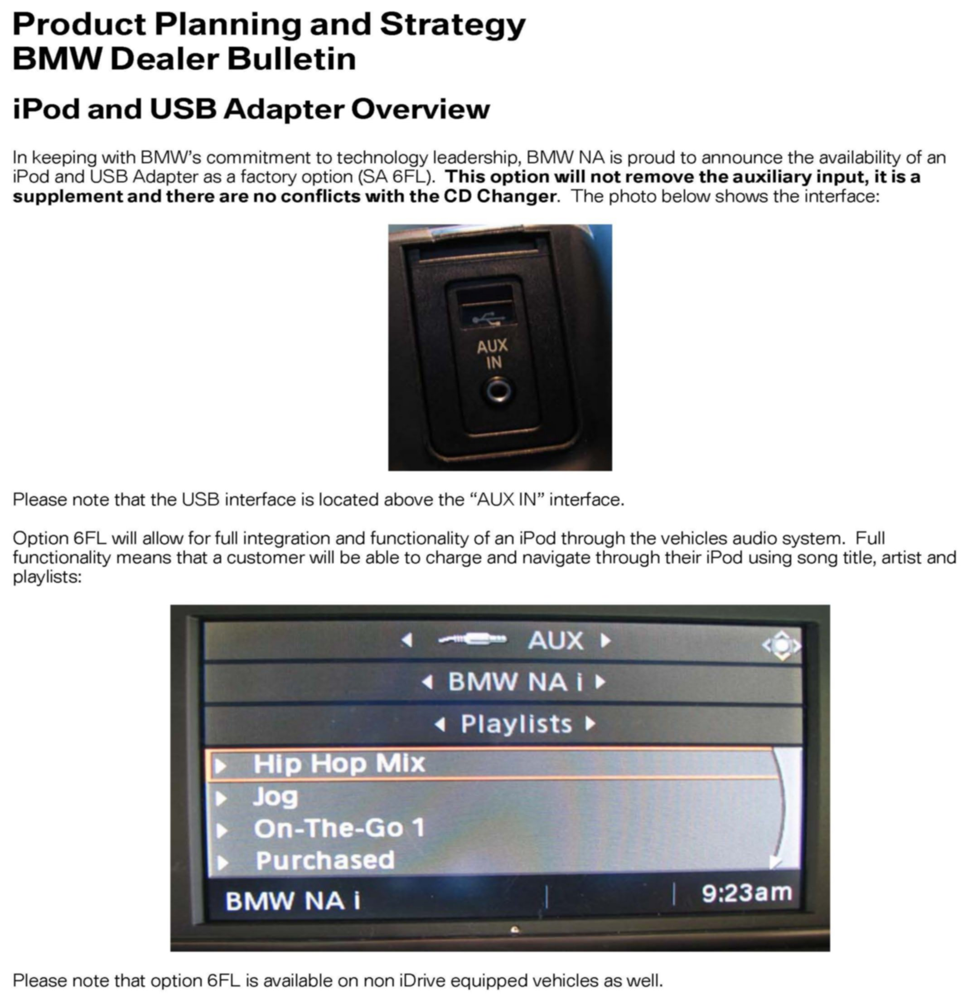

Audio System - Information On USB Audio Interface: Overview
SI B65 08 07Audio, Navigation, Monitors, Alarms, SRS
June 2012
Technical Service
This Service Information bulletin supersedes SI 65 08 07 dated June 2009.
[NEW] designates changes to this revision
SUBJECT
USB Audio Interface
MODEL
[NEW] All vehicles with
^ Option 6FL (USB Audio Interface)
Or
^ Option 6NL (Connection Bluetooth + USB devices incl.)
INFORMATION
The USB Audio interface is only available as a factory-installed option and cannot be retrofitted.
The USB Audio Interface allows the connection of compatible MP3 players, such as an Apple iPod (Generation4 or higher), to the vehicle and operates it through the vehicles audio controls.
In addition to MP3 players, audio files on USB sticks can also be played through the USB audio interface.
Only audio files can be played. Accessing other files such as videos is not possible.
The USB audio interface currently supports the following compressed formats:
^ MP3 (mp3)
^ AAC (aac, m4a, m4b)
^ WAV/PCM (wav)
^ WMA (wma, asf)
^ Playlists in M3U format
NOTE:
WAV files are not supported in playlists.
It is possible to access all stored audio data directly through a playlist, as well as searching for genre, artist, album or title. However, the sorting and displaying of audio files in the vehicle can only be carried out correctly if all the data stored on the MP3 player (e.g., ID3 tags) contains only Roman characters. Playlists must contain absolute path indications if the audio file is not located in the same directory as the playlist itself.
Storage of the device and first installation
Observe all operating and storage instructions for the device if the iPod, MP3 player or USB stick is stored in the vehicle. It is recommended not to store iPods, MP3 players or USB sticks in the vehicle for any length of time, since extreme environmental conditions (temperature, humidity) may cause damage to the device.
Upon initial connection of an iPod, MP3 player or USB stick containing large amounts of data, audio files can be only accessed through the directory structure of the device. The search by genre, artist, album or title only becomes available after the corresponding file information has been transferred to the vehicle. The performance of an iPod, MP3 player or USB stick in the vehicle (such as duration of synchronization or operation speed) depends on the storage capacity and technology of the device, as well as the number and the format of stored audio files. For example, the synchronization of a USB stick with 8 GB of flash storage can take up to 10 minutes; longer synchronization times could be due to device specific characteristics. During this time, music titles can be selected through indexes and file names.
Should the interaction of an iPod, MP3 player or USB stick with the USB Audio Interface not function correctly, it may also be due to defective or unsupported encoding of audio files (e.g., bit rates bigger than 256 kbit/s).
For questions, please contact your local customer service directly or via email at: customer.service@bmw.com.
Compatible devices
Due to the variety of MP3 players and USB sticks and their technical differences, faultless operation with the USB audio interface cannot be guaranteed for all devices.
For a list of compatible and/or recommended USB devices, please refer to the BMW USA website: www.bmw.com/com/en/owners/navigation/audio/usb_audio.html.
For more detailed information on how to operate the connected audio device (iPod, MP3 or USB device) through the vehicle audio system, refer to the Owners Manual.
The message "Incompatible Device" indicates the usage of an incompatible type of device.
IMPORTANT:
The playing of audio files from mobile phones equipped with a USB interface through the USB audio interface is not recommended. The receiving or placing of phone calls cannot be guaranteed, because some mobile phone models exclude Bluetooth functionality in conjunction with a USB connection.
NOTE:
Charging the device through the cigar lighter should be avoided because of possible audio distortions caused by the cigar lighter.
Apple iPod devices
Identifying iPod models:
docs.info.apple.com/article.html?artnum=61688
^ iPod shuffle (with flash storage).
NOTE:
Can only be connected and used as "USB Mass Storage Class" devices along with a USB cable, if the File Allocation Table (FAT) format is used.
^ Details for using the iPod as a "storage drive" can be found online: docs.info.apple.com/article.html?artnum=61131
^ Information on how to detect the software version of an iPod is available online: docs.info.apple.com/article.html?artnum=60984
NOTE:
When the iPod is connected to iTunes through a PC, iTunes is capable of automatically updating the iPod software. This could adversely affect the interaction of the iPod with the USB audio interface.
[NEW] Vehicles without option 6NL (Connection Bluetooth + USB devices incl.):
Apple iPod devices must be connected to the vehicle through the adapter cable provided (Y cable from 30-pin-connector to USB and AUX-In).
It enables quick access to the iPods audio files and also charges the iPod while connected to the vehicle via the USB connector. In addition, copy-protected music files can also be played.
IMPORTANT:
If the provided adapter cable for the Apple iPod is not used, iPod devices can only be used as a "storage drive" with the FAT format; the operation of iPod devices under MacOS is also not possible.
Refer to the Aftersales Business Development & Marketing BMW Dealer Bulletin 65 04 07. See Attachment A.
[NEW] Vehicles with option 6NL (Connection Bluetooth + USB devices incl.):
[NEW] The Apple USB cable must be used (white USB cable which comes with the Apple device).
iPod devices can be disconnected from the vehicle at any time. Only the audio content of videos can be played.
MP3 devices
MP3 players can be connected to the vehicle through an aftermarket USB cable.
These devices will then also be charged through the USB connection.
IMPORTANT:
Copy-protected music files are not supported for these devices.
Devices with "Media Transfer Protocol (MTB)" cannot be used with the USB audio interface.
This applies especially to devices with the "PlaysForSure" logo. To convert the device into "USB Mass Storage Class" mode, refer to the owners manual of the MP3 player.
The MP3 player needs to be formatted with the FAT file system. Only the files of the first partition will be displayed.
NOTE:
During synchronization of an MP3 player with a PC, the software of the MP3 player could be automatically updated.
This could adversely affect the compatibility of the MP3 player with the USB audio interface.
USB devices
USB sticks can be connected directly to the USB Audio Interface.
NOTE:
On 1 Series, 3 Series and Z4 vehicles only, an adapter cable has to be used when connecting a USB stick to the USB Audio Interface to prevent damage to the USB stick when closing the armrest. This adapter cable is no longer provided by the factory in these vehicles from May 2009 on. On a customer request basis, it can be ordered through parts (P/N 84 10 9 143 446).
These devices will then also be charged through the USB connection.
IMPORTANT:
Copy-protected music files are not supported for these devices.
USB hard disks and USB hubs and/or card reader with several inputs cannot be used with the USB Audio Interface.
IMPORTANT:
The use of USB sticks with an integrated hard disk is not recommended, since tests have shown that their audio quality may not be acceptable.
USB sticks need to be formatted with the FAT format. Only the files of the first partition will be displayed.
Due to the variety of USB sticks on the market and their technical differences, faultless operation in the vehicle can only be ensured through testing the product in the vehicle.
ATTACHMENT

Attachment A